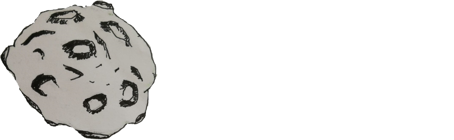
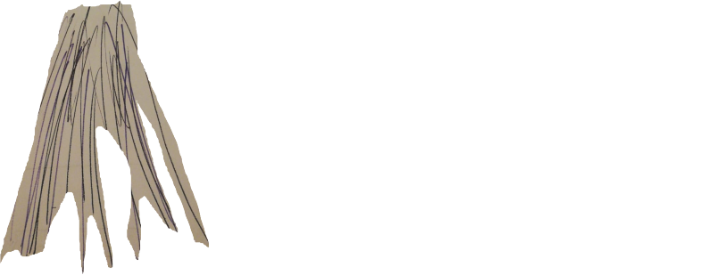

<!DOCTYPE html>
<html>
<head>
	<title>ConcursoPicasso</title>
<style type="text/css">
	.encabezado{
		font-family: comic sans;
		font-size: 25px;
		text-align: center;
		text-shadow: 1px 1px red;
		margin: auto;
		border-radius: 20px 20px;
		width: 90%;
		font-weight: 900;
		background-image: linear-gradient(to right, black, gray, black);
	}
}
	img{
			border-radius: 10px;
			width: 600px;
			height: 600px;
			margin-right: 20px;
			margin-left: 20px;

	}
	.divImagen1{
		margin: auto;
		width: 50%;
		border: 1px solid
		padding-top: 10px;
	}

	div{
		padding-top: 10px;
	}

	body{
		background: url(img/fondo.jpg) no-repeat;
		position: absolute;
		width: 100%;
	}

	@keyframes fondo{
		0% {opacity: 1}
		25% {opacity: 0.5}
		50% {opacity: 0.25}
		75% {opacity: 0.15}
	}

	.coco{
		/*border: 1px solid;*/
		margin-right: 750px;
		margin-top: 250px;
		margin-left: 400px;
		animation-name: giroCoco;
		animation-duration: 6s;
		animation-iteration-count: infinite;
	}

	img{
		width: 220%
	}
	


	@keyframes giroNave {

		0% {transform: rotateZ(6grad);}
		25% {transform: rotateZ(8grad);}
		50% {transform: rotate(10grad);}
	}
	

	@keyframes giroCoco {

		0% {transform: rotateY(90grad);}
		25% {transform: rotateY(180grad);}

	}

	.asideimgNave{
		/*border: 1px solid;*/
		width: 25%;
		height: 225px;
		margin-left: 380px;
		animation-name: giroNave;
		animation-duration: 8s;
		animation-iteration-count: infinite; 
	}

	.sat{
		width: 700%;
	}

	.asideSat{
		/*border: 2px solid blue;*/
		width: 10%;
		height: 10px;
		float: right;
		margin: auto;
		margin-right: 300px;
		margin-bottom: 100%;
		animation-name: sat;
		animation-duration: 2s;
		animation-iteration-count: infinite;
	}

	@keyframes sat{
		0% {transform: rotate(1grad);}
		25% {transform: rotate(2grad);}
		50% {transform: rotate(2grad);}
	}

	.rayos{
		margin-left: 25px;
		margin-bottom: 100px;
		animation-name: rayoAnimacion;
		animation-duration: 1.5s;
		animation-iteration-count: infinite;
	}


	@keyframes rayoAnimacion{
		0% {opacity: 0.5;}
		25% {opacity: 0.25;}
		50% {opacity: 0.5;}
		75% {opacity: 0.75;}

	}

	.planeta1{
		width: 12%;
		/*border: 1px solid;*/
		margin-right: 400px;
		margin-top: 90px;
		float: right;
		animation-name: planetaAnimacion;
		animation-duration: 2s;
		animation-iteration-count: infinite;
	}

	@keyframes planetaAnimacion{
		0% {width: 12%}
		25% {width: 12.5%}
		50% {wid}
	}

</style>
<body>
	<aside class="planeta1">
		
	</aside>
	<aside class="asideimgNave">
		
		
	</aside>
	<aside class="asideSat">
		
	</aside>
	<article class="coco">
		
	</article>
</body>
</html>